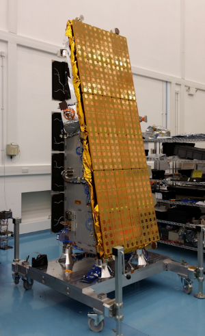

| Import NovaSAR | |
NovaSAR is a 450kg imaging radar satellite, designed and built in the UK under funding by Airbus, SSTL and the UK Space Agency. It carries an S-Band SAR payload and an AIS (Automatic Identification of Ships) receiver payload. The platform was built by SSTL, and the SAR payload was built by Airbus. NovaSAR will fly in sun-synchronous low-Earth orbit at approximately 583km altitude with LTAN 10.30am, providing a repeat period of 14 days. It is expected to be launched towards the end of 2018 and is equipped for a nominal lifetime of 7 years.

NovaSAR-S in the clean room at SSTL, Guildford
A brief description of the sensor is on the SAR Payload Details page.
Further information about NovaSAR can be found at:
Note that mode information in this document supersedes data presented in the above eoportal website
Phil Whittaker
SAR Payloads Manager
Surrey Satellite Technology Ltd (SSTL), Guildford, UK
p.whittaker@sstl.co.uk
Martin Cohen,
SAR Payload Technical Lead & Engineering Manager,
Airbus Defence & Space, Portsmouth, UK
martin.cohen@airbus.com